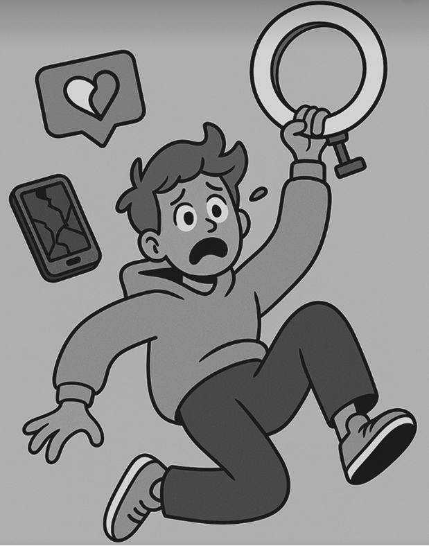
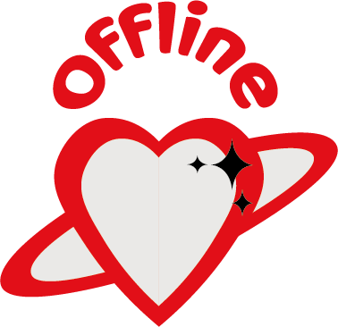
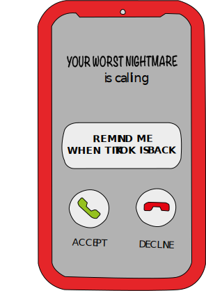

Tema 4
Grundlæggende animation
Emergency-site
I tema 4 arbejdede vi med at designe og udvikle et interaktivt website med udgangspunkt i emnet EMERGENCY. Vi fik mulighed for selv at vælge en vinkel og udvikle idé, indhold og funktioner til en løsning.

Illustrator og vektor-grafik
I temaet arbejdede vi med Adobe Illustrator til at skabe grafiske elementer i vektorgrafik, som bl.a. blev brugt til infografik og visuelle detaljer på websitet heriblandt et logo.

JavaScript
I tema 4 fik vi praktisk erfaring med JavaScript og lærte, hvordan man skaber interaktivitet på et website. Vi brugte JavaScript til at:
- Validere formular-input
- Skifte mellem dark/light mode
- Aktivere pop-up vinduer
- Skabe dynamiske nyhedssektioner
Gennem konkrete øvelser fik vi en grundlæggende forståelse for, hvordan JavaScript kan bruges til at gøre et website mere levende og brugervenligt.

Se proces
Se proces